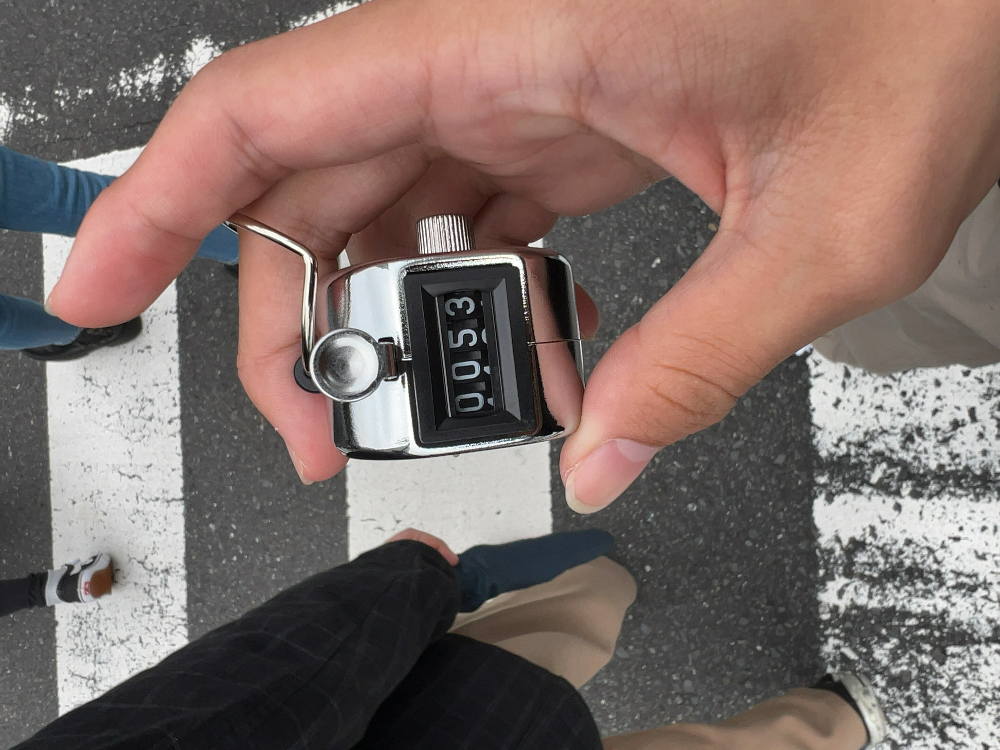

この地図の左側の矢印線で移動観察を行いました。
カバンの種類は「リュック」「ショルダーバッグ」「トートバッグ」「ハンドバック」「その他」これに分けて観察を行いました。
自分が担当したのはショルダーバッグです。

今回、観察を行う中で1つミスと言えることがありました。それは、ぴあアリーナの前を通ったことです。
これによりしっかりとした数がカウントできていえるとは言えなくなりました。
出来る限りカウントした結果、53人の人が「ショルダーバッグ」を身に着けていました。
ぴあアリーナにたくさんの人がいた中でこの数はとても少ないと感じました。
今回の観察では「リュック」を身につけている人が1番多かったことがわかりました。